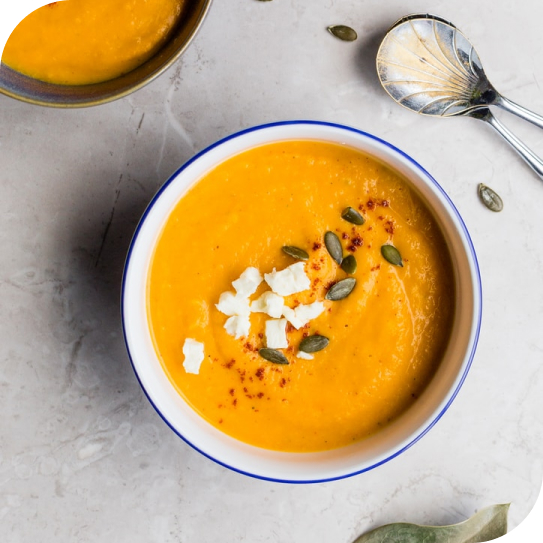

<div class="recipe-of-day">
    
    <div class="recipe-of-day__block">
        <div class="recipe-of-day__info font__text_tiny">
            
            <span>356</span>
            
            <span>35 минут</span>
        </div>
        
        <h3 class="recipe-of-day__title font__title_large">
            Тыквенный супчик На кокосовом молоке
        </h3>
        <p class="recipe-of-day__description font__text_normal">
            Если у вас осталась тыква, и вы не знаете что с ней сделать, то это решение для вас! 
            Ароматный, согревающий суп-пюре на кокосовом молоке. Можно даже в Пост! 
        </p>
    </div>
</div>
